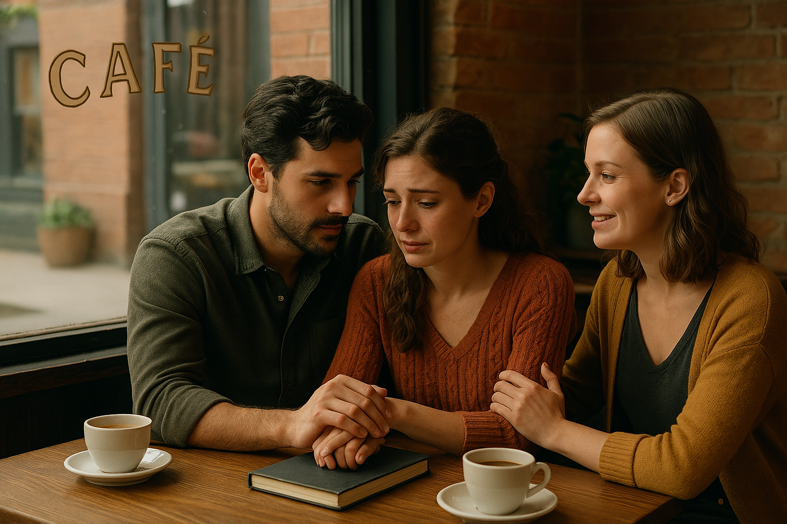

Животът на Елена и Марко, след като преживяха вдъхновяващото пътешествие до върха на хълмовете, изглеждаше изпълнен с хармония. Техният съвместен проект вървеше все по-добре, вдъхновението беше на високо ниво, а тяхната връзка, както творческа, така и лична, растеше с всеки изминал ден. Въпреки това, животът им поднесе неочаквано предизвикателство, което постави на изпитание всичко, което бяха изградили до момента. Марко получи предложение за работа в далечен град, което обещаваше да открие нови възможности за кариерата му и да изведе изложбата им на международно ниво. Това предложение беше голямо постижение, което той не можеше да откаже, но за Елена новината дойде като удар. И макар че беше горда с неговия успех, тя не можеше да не почувства страха от раздялата. Страхът от неизвестното, от дистанцията, от промяната – всички тези емоции я обземаха, въпреки че не беше сигурна как да ги изрази. "Как ще бъде, когато не сме заедно?", попита тя, когато Марко ѝ разказа за предложението. "Как ще продължим всичко това, което сме изградили, ако сме толкова далеч един от друг?" Марко я гледаше с разбиране. Той също усещаше тежестта на ситуацията. "Знам, че ще бъде трудно, но вярвам, че това е възможност, която не можем да изпуснем. Искам да представя нашата работа на световната сцена. Но няма да позволя това да ни раздели." Анна, която беше била важна част от тяхната връзка и приятелство през цялото време, стана отново мост между тях. Тя разбра тяхното притеснение и с топлина и мъдрост се обърна към двамата. "Знаете ли", каза тя с усмивка, "възможността да бъдете на различни места може да бъде не само изпитание, но и шанс да растете още повече. Разстоянието няма да ви раздели, ако вярвате в себе си и във вашата любов. За да бъде една връзка силна, тя трябва да може да устои на всяко изпитание, на всяка раздела. Вярвайте, че това ще ви направи още по-силни." Елена и Марко се погледнаха и разбраха, че Анна беше права. Разстоянието, колкото и да беше трудно, можеше да бъде възможност да се фокусират върху своите лични цели, да укрепят основите на своята връзка и проект и да се върнат с нови идеи и вдъхновение. "Ще го направим", каза Марко, като хванал ръката на Елена. "Ще използваме това време разделени, за да изградим още по-силна основа, както за нашето творчество, така и за нашата връзка. Ще се върнем още по-силни." Елена кимна, макар и с малко сълзи в очите. "Ще бъде трудно, но знам, че любовта и вдъхновението ще ни водят през всичко. Обещавам, че ще бъда тук, за да подкрепям всичко, което правиш." Анна се усмихна широко, като видя как двамата започват да се успокояват. "Това е важно. Ще откриете, че разделите, колкото и да изглеждат страшни, често са именно тези, които ни сближават, когато разберем, че любовта е нещо, което не се измерва с разстояние." Тримата седяха заедно на края на масата в уютното кафене, където преди време бяха обсъждали мечтите си. Елена и Марко, макар и изпълнени с противоречиви емоции, знаеха, че времето ще покаже какви ще бъдат следващите им стъпки. Въпреки че предстоят предизвикателства и раздяла, те се чувстваха уверени, че това няма да ги раздели. Напротив, вярваха, че всяка трудност ще бъде повод за ново израстване, както в тяхното творчество, така и във връзката им. И точно това ги свързваше още по-силно. 